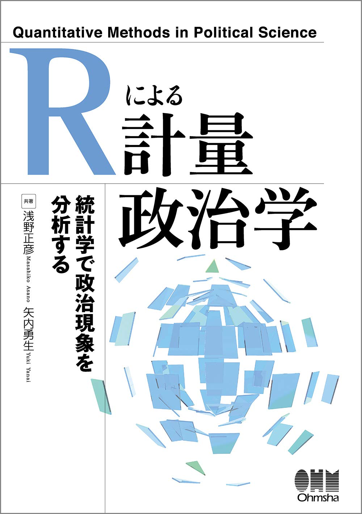

矢内 勇生（Yuki YANAI）
ホーム
略歴
業績
授業
教科書
その他
English
執筆した教科書
『
政治経済学：グローバル化時代の国家と市場
』
田中拓道
氏, 近藤正基氏, 上川龍之進氏と共著
2020年,
有斐閣
ISBN: 978-4-641-15079-9
ここ
から購入できます
電子版（固定レイアウト）もあります
紀伊國屋電子書籍ストア
amazon（kindleストア）
大学生協 (VarsityWave eBooks)
『
Rによる計量政治学
』

浅野正彦
氏と共著
2018年,
オーム社
ISBN: 978-4-274-22313-2
サポートページ
ここ
から購入できます（電子書籍もあります）
『
Stataによる計量政治学
』
浅野正彦
氏と共著
2013年,
オーム社
ISBN: 978-4-274-06910-9
サポートページ
ここ
から購入できます（電子書籍もあります）